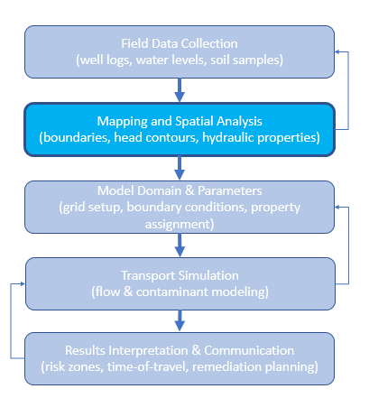

5. Site Mapping Tools#
This chapter—site.mapping.tools—builds a small, reusable toolkit for various kinds of mapping.
Course Website
%%html
<style> table {margin-left: 0 !important;} </style>
Readings#
Video(s)#
Background#
Mapping is a foundational step in understanding groundwater transport because transport is controlled not only by subsurface properties, but also by how those properties vary spatially. A well-prepared map transforms scattered data points—such as well logs, water table elevations, contaminant concentrations, or soil classifications—into a coherent spatial framework.
In groundwater transport studies, mapping serves several critical purposes:
Defining boundaries and extents – Accurate maps delineate watershed limits, recharge zones, aquifer boundaries, and areas of interest, ensuring that the domain for modeling or analysis is well-defined.
Visualizing gradients and flow directions – Contour maps of hydraulic head, for example, make it immediately apparent where groundwater is flowing and where potential stagnation or discharge zones occur.
Linking data to location – Transport parameters such as hydraulic conductivity, porosity, dispersivity, or sorption capacity often vary spatially. Mapping these variations allows for realistic spatial discretization in numerical or analytical models.
Identifying sources and receptors – Maps help pinpoint contaminant sources (e.g., leaking storage tanks) and potential receptors (e.g., wells, streams, wetlands) so transport paths can be evaluated.
Communicating findings – Visual maps are far more effective than tables or text for conveying complex spatial relationships to decision makers, stakeholders, and the public.
In short, mapping is not just a cartographic exercise—it is a way of integrating and communicating the spatial framework that underlies every calculation in groundwater transport analysis. Without a sound mapping base, even sophisticated transport models risk being misapplied or misinterpreted. The figure below diagrams the relationship of mapping to groundwater transport phenomenon.

Note
GIS platforms provide powerful built-in mapping capabilities, but they are designed for general-purpose spatial analysis rather than the highly customized needs of a groundwater transport study. Site-specific work—such as integrating nonstandard monitoring data formats, applying custom interpolation or statistical routines, or embedding mapping directly into a modeling workflow—may require flexibility beyond what a GIS interface allows. External tools, such as Python scripts, command-line utilities, or domain-specific modeling packages, let us automate repetitive steps, ensure reproducibility, and tailor the mapping process to the unique geometry, data constraints, and analytical requirements of a site.
This chapter focues on two complementary mapping threads to support a groundwater transport study:
2D surface visualization from XYZ data. Using tabular files (structured XYZ) where Z can be elevation, concentration, temperature, etc., we produce:
Contour maps (line and filled)
Wireframe surfaces
Filled 3D surfaces colored by Z
These visualizations support interpretation on their own and also serve as intermediate steps when constructing flow fields for particle-tracking style models. The contour map tools can also generate output files (.PNG or .PDF) with a transparent background, allowing them to be overlaid directly onto GIS maps. To align these overlays, you only need the lower-left and upper-right corner coordinates to match the GIS coordinate reference system (CRS)—once aligned, the image can be dropped seamlessly into the GIS environment.
3D conceptual block models of the subsurface.
From datasets of the form x, y, z_low, z_high, attribute (e.g., clay/silt/sand), we render colored prisms to visualize lithologic intervals and the “shape” of the subsurface.
Optional tools allow these volumes to be sliced—by profile, layer, or custom plane—to highlight specific features and support interpretation.
Approach#
We deliberately stay within the open-source Python stack (ENGR-1330 methods) and standard plotting tools. The goal is to demonstrate practical ways to produce different types of maps while providing a reliable, working code base you can adapt for your own projects. You’ll be responsible for extending and modifying these examples to fit your specific site and objectives—remember, AI assistants are well-suited for helping you make such modifications, and you can always return to this code base if something breaks.
Tip
The tools herein use:
Core: NumPy, Pandas, SciPy, Matplotlib (including matplotlib.tri)
Optional (for richer 3D slicing and interaction): PyVista (VTK)
If you want to use the 3D slicing and interactive features, you’ll need to install pyvista in your Python environment. In the examples shown here, the code runs on a headless server (no desktop GUI), so some interactive PyVista features are unavailable. If you run the scripts on your own computer with a desktop environment, you may have access to richer interactive capabilities.
Examples use both real digitized datasets and synthetic datasets. The goal is portability: you create a structured input file, choose plotting parameters, and—voilà—you have publication-quality figures. Because everything is open source, you can tailor the code to your project rather than forcing your project to fit a tool.
Note
Yes, we are effectively building lightweight “specialized software.” The difference is intent and control: by investing time in a clear learning curve and data preparation, we avoid licensing limits and can adapt the tools to your needs.
What we will build#
A set of drop-in plotting functions with consistent signatures:
plot_contours_gridded_from_xyz(...)andplot_contours_triangulated_from_xyz(...)plot_wireframe_from_xyz(...)andplot_triangulated_surface_from_xyz(...)Options for filled surfaces, vertical exaggeration, consistent color scales, basemap underlays, and safe interpolation at arbitrary query points.
A simple 3D block-model renderer (colored prisms) from z_low / z_high / attribute tables, with a pathway to PyVista for slicing and interactive inspection.
Data expectations#
2D surfaces: CSV/TSV with columns like X-Easting, Y-Northing, Z-Elevation (names can be adapted).
3D blocks: x, y, z_low, z_high, attribute (attribute is a categorical string, e.g., “sand”).
Units and coordinate reference should be stated (e.g., feet vs meters), and the chapter examples assume a planar XY coordinate system.
Roadmap#
Contours from scattered XYZ (gridded and triangulated), including filled plan-view projections at a constant Z.
3D wireframe and filled surfaces with user-controlled vertical exaggeration.
Conceptual 3D block models from interval data, then move to PyVista for slicing and interactive exploration.
Up next: we start with 2D contouring and plan-view projections, then lift the surface into 3D.
5.1 Contour Plots#
Plots with gridding. Explain concept of gridding. Common issues where gridding fails
Plots using Delaunay triangulation. Value of triangulation. Common issues where trinagulation fails
# =====================================================================
# Script: plot_contours_gridded_from_xyz.py
# Author(s): Sensei + OpenAI
# Date: 2025-08-12
# Description:
# Plan-view contouring from scattered XYZ by gridding + interpolation.
# Supports line or filled contours, optional basemap, and overlay of
# original points. Designed for JupyterBook lessons.
# =====================================================================
import numpy as np
import pandas as pd
import matplotlib.pyplot as plt
from scipy.interpolate import griddata
def plot_contours_gridded_from_xyz(
filename,
sep='\t',
# levels: pass explicit list, or define start/stop/step, or None to auto
levels=None,
level_start=None, level_stop=None, level_step=None,
nx=200, ny=200,
method='cubic', # 'linear'|'cubic'|'nearest'
fillna='nearest', # None|'nearest'
filled=False, # False: contour lines; True: filled
cmap='terrain',
show_points=True,
point_size=6, point_color='k',
basemap_path=None, # e.g., "SomewhereUSABaseMap.png"
basemap_extent=None, # (xmin, xmax, ymin, ymax) if using basemap
title=None,
ax=None
):
"""
Plot plan-view contours by first interpolating scattered XYZ onto a grid.
Parameters
----------
filename : str
Path to text file with columns 'X-Easting', 'Y-Northing', 'Z-Elevation'.
sep : str, optional
Column delimiter (default tab).
levels : sequence of float, optional
Explicit contour levels. If None, will use (level_start, level_stop, level_step)
if provided, else auto-generate 10 levels from data range.
level_start, level_stop, level_step : float, optional
Convenience to build levels = np.arange(start, stop+step, step).
nx, ny : int
Grid resolution in X and Y.
method : {'linear','cubic','nearest'}
griddata interpolation method.
fillna : {None,'nearest'}
Fill NaNs after interpolation (useful near convex hull edges).
filled : bool
If True, use filled contours (contourf); else contour lines.
cmap : str
Matplotlib colormap for filled contours.
show_points : bool
Overlay original survey points.
point_size : float
Marker size for original points.
point_color : str
Color for original points.
basemap_path : str or None
Optional raster image path to show under contours.
basemap_extent : tuple or None
Extent (xmin, xmax, ymin, ymax) for basemap.
title : str or None
Plot title; defaults to 'Contour Plot from <filename>'.
ax : matplotlib Axes or None
Axes to draw into. If None, a new figure/axes is created.
Returns
-------
Xg, Yg, Zg, cs, ax : ndarray, ndarray, ndarray, QuadContourSet, Axes
Gridded coordinates/values, the contour set, and the axes.
Provenance
----------
Script by Sensei + OpenAI (2025-08-12)
"""
# --- Load data ---
df = pd.read_csv(filename, sep=sep)
x = df['X-Easting'].to_numpy()
y = df['Y-Northing'].to_numpy()
z = df['Z-Elevation'].to_numpy()
xy = np.column_stack([x, y])
# --- Build grid ---
xi = np.linspace(x.min(), x.max(), nx)
yi = np.linspace(y.min(), y.max(), ny)
Xg, Yg = np.meshgrid(xi, yi)
# --- Interpolate to grid ---
Zg = griddata(xy, z, (Xg, Yg), method=method)
if fillna == 'nearest':
mask = np.isnan(Zg)
if mask.any():
Zg[mask] = griddata(xy, z, (Xg, Yg), method='nearest')[mask]
# --- Levels logic ---
if levels is None:
if (level_start is not None) and (level_stop is not None) and (level_step is not None):
levels = np.arange(level_start, level_stop + 0.5 * level_step, level_step, dtype=float)
else:
zmin = np.nanmin(Zg); zmax = np.nanmax(Zg)
levels = np.linspace(zmin, zmax, 10)
# --- Plot ---
created_fig = False
if ax is None:
fig, ax = plt.subplots(figsize=(7.5, 6.5))
created_fig = True
else:
fig = ax.get_figure()
# Optional basemap
if basemap_path is not None:
im = plt.imread(basemap_path)
if basemap_extent is None:
basemap_extent = (x.min(), x.max(), y.min(), y.max())
ax.imshow(im, extent=basemap_extent, origin='upper')
# Contours
if filled:
cs = ax.contourf(Xg, Yg, Zg, levels=levels, cmap=cmap)
cb = fig.colorbar(cs, ax=ax, shrink=0.85, pad=0.02)
cb.set_label('Z')
else:
cs = ax.contour(Xg, Yg, Zg, levels=levels, linewidths=1.25, colors='k')
ax.clabel(cs, inline=True, fontsize=10)
if show_points:
ax.scatter(x, y, s=point_size, c=point_color, label='Survey Points')
ax.legend(loc='lower right')
ax.set_title(title or f'Contour Plot from {filename}')
ax.set_xlabel('X Coordinate (Easting)')
ax.set_ylabel('Y Coordinate (Northing)')
ax.set_xlim([x.min(), x.max()])
ax.set_ylim([y.min(), y.max()])
ax.set_aspect('equal', adjustable='box')
ax.grid(True, alpha=0.3)
if created_fig:
plt.tight_layout()
plt.show()
return Xg, Yg, Zg, cs, ax
# Gridded, filled contours with explicit levels
Xg, Yg, Zg, cs, ax = plot_contours_gridded_from_xyz(
'ARS-W1-XYZ.txt',
filled=True, cmap='terrain',
level_start=81, level_stop=102, level_step=1,
show_points=True
)
# =====================================================================
# Script: plot_contours_triangulated_from_xyz.py
# Author(s): Sensei + OpenAI
# Date: 2025-08-12
# Description:
# Plan-view contouring from scattered XYZ using Delaunay triangulation,
# with safe interpolation at arbitrary (x,y) query points. Outside-hull
# behavior is configurable (nan or nearest-neighbor fallback).
# =====================================================================
import numpy as np
import pandas as pd
import matplotlib.pyplot as plt
import matplotlib.tri as mtri
from matplotlib.tri import LinearTriInterpolator
from scipy.spatial import cKDTree
def plot_contours_triangulated_from_xyz(
filename,
sep='\t',
levels=None,
level_start=None, level_stop=None, level_step=None,
filled=False, # False: tricontour; True: tricontourf
cmap='terrain',
show_points=False,
point_size=6, point_color='k',
query_points=None, # e.g., [(400,200), (-350,-30)]
annotate_queries=True,
on_outside='nearest', # 'nearest' | 'nan' | 'ignore'
title=None,
ax=None
):
"""
Plot plan-view contours from scattered XYZ using triangulation.
Parameters
----------
...
query_points : list[(float,float)] or None
XY locations to interpolate Z. Safe outside-hull handling.
on_outside : {'nearest','nan','ignore'}
Behavior when a query point lies outside the triangulation hull
or in a masked triangle:
- 'nearest': use nearest original sample's Z
- 'nan': return np.nan
- 'ignore': attempt float() conversion (may warn)
...
Returns
-------
triang, cs, interpolator, ax : Triangulation, ContourSet, LinearTriInterpolator or None, Axes
Provenance
----------
Script by Sensei + OpenAI (2025-08-12)
"""
# --- Load data ---
df = pd.read_csv(filename, sep=sep)
x = df['X-Easting'].to_numpy()
y = df['Y-Northing'].to_numpy()
z = df['Z-Elevation'].to_numpy()
# --- Triangulate ---
triang = mtri.Triangulation(x, y)
# --- Levels logic ---
if levels is None:
if (level_start is not None) and (level_stop is not None) and (level_step is not None):
levels = np.arange(level_start, level_stop + 0.5 * level_step, level_step, dtype=float)
else:
zmin = np.nanmin(z); zmax = np.nanmax(z)
levels = np.linspace(zmin, zmax, 10)
# --- Plot setup ---
created_fig = False
if ax is None:
fig, ax = plt.subplots(figsize=(7.5, 6.5))
created_fig = True
else:
fig = ax.get_figure()
if filled:
cs = ax.tricontourf(triang, z, levels=levels, cmap=cmap)
cb = fig.colorbar(cs, ax=ax, shrink=0.85, pad=0.02)
cb.set_label('Z')
else:
cs = ax.tricontour(triang, z, levels=levels, linewidths=1.25, colors='k')
ax.clabel(cs, inline=True, fontsize=10)
# --- Optional interpolation queries (safe) ---
interpolator = None
if query_points:
interpolator = LinearTriInterpolator(triang, z)
trifinder = triang.get_trifinder()
# NN fallback prep (only used if on_outside == 'nearest')
kdtree = cKDTree(np.c_[x, y]) if on_outside == 'nearest' else None
for (qx, qy) in query_points:
z_val = np.nan
# Check which triangle this point falls into (-1 => outside)
tri_idx = trifinder(qx, qy)
if tri_idx != -1:
z_masked = interpolator(qx, qy) # returns masked array scalar
if np.ma.is_masked(z_masked):
# inside triangulation but masked face (rare); treat as outside
pass
else:
z_val = float(z_masked)
# If outside or masked, handle per policy
if np.isnan(z_val):
if on_outside == 'nearest':
d, idx = kdtree.query([qx, qy], k=1)
z_val = float(z[idx])
elif on_outside == 'ignore':
# original behavior (may warn); try conversion anyway
try:
z_val = float(interpolator(qx, qy))
except Exception:
z_val = np.nan
else: # 'nan'
z_val = np.nan
ax.plot(qx, qy, 'ro', ms=5)
if annotate_queries:
txt = "NaN" if np.isnan(z_val) else f"{z_val:.2f}"
ax.annotate(txt, (qx + 10, qy + 10), color='red', fontsize=9)
if show_points:
ax.scatter(x, y, s=point_size, c=point_color, label='Survey Points')
ax.legend(loc='lower right')
ax.set_title(title or f'Contour Plot from {filename}')
ax.set_xlabel('X Coordinate (Easting)')
ax.set_ylabel('Y Coordinate (Northing)')
ax.set_xlim([x.min(), x.max()])
ax.set_ylim([y.min(), y.max()])
ax.set_aspect('equal', adjustable='box')
ax.grid(True, alpha=0.3)
if created_fig:
plt.tight_layout()
plt.show()
return triang, cs, interpolator, ax
plot_contours_triangulated_from_xyz(
'ARS-W1-XYZ.txt',
levels=[float(i) for i in range(81,103,1)],
query_points=[(400, 200), (-350, -30)], # try one outside the hull too
on_outside='nearest', # or 'nan'
show_points=True
)
(<matplotlib.tri._triangulation.Triangulation at 0x7e1cc2762770>,
<matplotlib.tri._tricontour.TriContourSet at 0x7e1cc27c28c0>,
<matplotlib.tri._triinterpolate.LinearTriInterpolator at 0x7e1cc27e8e20>,
<Axes: title={'center': 'Contour Plot from ARS-W1-XYZ.txt'}, xlabel='X Coordinate (Easting)', ylabel='Y Coordinate (Northing)'>)
import pandas
import numpy
import matplotlib.pyplot
from scipy.interpolate import griddata
#######################################################################
# Irregular data are interpolated onto a regular grid before plotting #
#######################################################################
# === Load Data ===
filename = 'ARS-W1-XYZ.txt'
my_xyz = pandas.read_csv(filename, sep='\t')
my_xyz = pandas.DataFrame(my_xyz)
coord_x = my_xyz['X-Easting'].values.tolist()
coord_y = my_xyz['Y-Northing'].values.tolist()
coord_z = my_xyz['Z-Elevation'].values.tolist()
coord_xy = numpy.column_stack((coord_x, coord_y))
# === Create Grid ===
lon = numpy.linspace(min(coord_x), max(coord_x), 200)
lat = numpy.linspace(min(coord_y), max(coord_y), 200)
X, Y = numpy.meshgrid(lon, lat)
Z = griddata(numpy.array(coord_xy), numpy.array(coord_z), (X, Y), method='cubic', fill_value=numpy.nan)
# === Plotting ===
use_basemap = False # <- Flip to True if you ever want to bring it back
if use_basemap:
matplotlib.pyplot.rcParams["figure.figsize"] = [10.0, 10.0]
matplotlib.pyplot.rcParams["figure.autolayout"] = True
im = matplotlib.pyplot.imread("SomewhereUSABaseMap.png")
fig, ax = matplotlib.pyplot.subplots()
if use_basemap:
ax.imshow(im, extent=[0, 3361, 0, 1458])
# Contours
levels = [float(i) for i in range(81,103,1)]
CS = ax.contour(X, Y, Z, levels, linewidths=1)
ax.clabel(CS, inline=2, fontsize=12)
# Titles and limits
ax.set_title(f'Contour Plot from {filename}')
ax.set_xlim([min(coord_x), max(coord_x)])
ax.set_ylim([min(coord_y), max(coord_y)])
ax.set_aspect('equal', adjustable='box') # <- Enforce 1:1 aspect ratio
# Plot a line segment to represent the weir wall
# Line segment coordinates
x1, y1 = -485, -40
x2, y2 = -180, -44
# Draw the line segment
ax.plot([x1, x2], [y1, y2], color='grey', linewidth=6)
# Annotate the segment
ax.annotate("Weir Wall", # Text label
xy=(x2, y2), # Point being annotated
xytext=(x2 + 100, y2 + 100), # Label position
arrowprops=dict(arrowstyle='->', color='black'),
fontsize=12, color='black')
# Plot a red filled circle at the gage location
x_marker = -390
y_marker = -45
ax.plot(x_marker, y_marker, 'o', markersize=16, color='red')
# Annotate the marker
ax.annotate("Weir Outlet", # Text label
xy=(x_marker, y_marker), # Point being annotated
xytext=(x_marker + 100, y_marker + 100), # Label position
arrowprops=dict(arrowstyle='->', color='black'),
fontsize=12, color='black')
ax.set_xlabel("X Coordinate (Easting, ft)")
ax.set_ylabel("Y Coordinate (Northing, ft)")
ax.grid(True)
# Add scatter plot of original XYZ data
ax.scatter(coord_x, coord_y, color='black', s=2, label='Survey Data Points')
ax.legend(loc='lower right')
matplotlib.pyplot.show()
import pandas
import numpy
import matplotlib.pyplot
from scipy.interpolate import griddata
#######################################################################
# Irregular data are interpolated onto a regular grid before plotting #
#######################################################################
original_points=True # switch to overlay original points
# === Load Data ===
filename = 'ARS-W1-XYZ.txt'
my_xyz = pandas.read_csv(filename, sep='\t')
my_xyz = pandas.DataFrame(my_xyz)
coord_x = my_xyz['X-Easting'].values.tolist()
coord_y = my_xyz['Y-Northing'].values.tolist()
coord_z = my_xyz['Z-Elevation'].values.tolist()
coord_xy = numpy.column_stack((coord_x, coord_y))
# === Create Grid ===
lon = numpy.linspace(min(coord_x), max(coord_x), 200)
lat = numpy.linspace(min(coord_y), max(coord_y), 200)
X, Y = numpy.meshgrid(lon, lat)
Z = griddata(numpy.array(coord_xy), numpy.array(coord_z), (X, Y), method='cubic', fill_value=numpy.nan)
# === Plotting ===
use_basemap = False # <- Flip to True if you ever want to bring it back
if use_basemap:
matplotlib.pyplot.rcParams["figure.figsize"] = [10.0, 10.0]
matplotlib.pyplot.rcParams["figure.autolayout"] = True
im = matplotlib.pyplot.imread("SomewhereUSABaseMap.png")
fig, ax = matplotlib.pyplot.subplots()
if use_basemap:
ax.imshow(im, extent=[0, 3361, 0, 1458])
# Contours
levels = [float(i) for i in range(81,103,1)]
CS = ax.contour(X, Y, Z, levels, linewidths=1)
ax.clabel(CS, inline=2, fontsize=12)
# Titles and limits
ax.set_title(f'Contour Plot from {filename}')
ax.set_xlim([min(coord_x), max(coord_x)])
ax.set_ylim([min(coord_y), max(coord_y)])
ax.set_aspect('equal', adjustable='box') # <- Enforce 1:1 aspect ratio
ax.grid(True)
if original_points:
# Add scatter plot of original XYZ data
ax.scatter(coord_x, coord_y, color='black', s=2, label='Survey Data Points')
ax.legend(loc='lower right')
matplotlib.pyplot.show()
import pandas as pd
import numpy as np
import matplotlib.pyplot as plt
import matplotlib.tri as tri
from matplotlib.tri import LinearTriInterpolator
original_points = False # switch to overlay original points
interpolate_flag = True
filename='ARS-W1-XYZ.txt'
# === Load Data ===
my_xyz = pd.read_csv(filename, sep='\t')
coord_x = my_xyz['X-Easting'].values
coord_y = my_xyz['Y-Northing'].values
coord_z = my_xyz['Z-Elevation'].values
# === Triangulate for Irregular Grid ===
triang = tri.Triangulation(coord_x, coord_y)
# === Optional Base Map Image ===
# insert code later
# === Contour Plot via Triangulation ===
fig, ax = plt.subplots()
levels = [float(i) for i in range(81,103,1)]
CS = ax.tricontour(triang, coord_z, levels, linewidths=2)
ax.clabel(CS, inline=True, fontsize=12)
# === Bounding Box Overlay ===
# insert code later
# === Interpolator Block (for future particle tracking logic) ===
if interpolate_flag:
interpolator = LinearTriInterpolator(triang, coord_z)
# Define a test point
x_query = 400
y_query = 200
z_est = interpolator(x_query, y_query)
print(f"Interpolated Z at ({x_query:.2f}, {y_query:.2f}) = {z_est:.3f}")
ax.plot(x_query, y_query, 'ro') # Red dot
ax.annotate(f"{z_est:.2f}", (x_query + 10, y_query + 10), color='red', fontsize=10)
# === Final Plot Settings ===
if original_points:
# Add scatter plot of original XYZ data
ax.scatter(coord_x, coord_y, color='black', s=2, label='Survey Data Points')
ax.legend(loc='lower right')
ax.set_title(f'Contour Plot from {filename}')
ax.set_xlim([min(coord_x), max(coord_x)])
ax.set_ylim([min(coord_y), max(coord_y)])
ax.set_aspect('equal', adjustable='box') # <- Enforce 1:1 aspect ratio
ax.set_xlabel("X - Easting")
ax.set_ylabel("Y - Northing")
plt.grid(True)
plt.show()
print(max(coord_y))
CS
Interpolated Z at (400.00, 200.00) = nan
471.053705
<matplotlib.tri._tricontour.TriContourSet at 0x7e1cc0cfb730>
5.2 Wireframe Plots#
A wireframe plot is a three-dimensional representation of a surface where the surface is drawn as a mesh of intersecting lines rather than as a solid, filled object. In contrast, a contour plot flattens the same data into a two-dimensional view, showing lines (contours) of constant value projected onto a horizontal plane. Both originate from the same underlying dataset—typically a set of \(x,y,z\) points—but they convey different perspectives. A contour plot emphasizes the plan view and makes it easy to read values and gradients at specific horizontal positions. A wireframe plot, on the other hand, reveals the form and shape of the surface in three dimensions, allowing the viewer to perceive slopes, peaks, and valleys from an oblique angle.
Wireframe plots can be especially useful in groundwater transport studies when you want to visualize surfaces such as water table elevations, contaminant concentration distributions, or subsurface temperature fields in a way that makes vertical variation obvious. Because they are less visually dense than filled 3D surfaces, wireframes often make it easier to see through the mesh to underlying features or reference grids. They also help highlight spatial relationships—such as how a contaminant plume rides along a sloping water table—that may not be as immediately apparent in a flat contour map. In practice, wireframe and contour plots are complementary: the contour plot provides precise horizontal context, while the wireframe offers a spatial form that can be easier for some audiences to interpret intuitively.
The scripting code is nearly identical to that used for contour plots, but it employs a different rendering engine within
matplotlib.
# =====================================================================
# Script: plot_wireframe_from_xyz.py
# Author(s): Sensei + OpenAI
# Date: 2025-08-12
# Description:
# Utility function to plot a 3D wireframe from an XYZ dataset using
# gridding + interpolation. Designed for pedagogical use in
# JupyterBooks, teaching site characterization, contouring, and
# surface visualization. Supports vertical exaggeration to improve
# interpretability when XY ranges greatly exceed Z range.
# =====================================================================
import numpy as np
import pandas as pd
import matplotlib.pyplot as plt
from scipy.interpolate import griddata
from mpl_toolkits.mplot3d import Axes3D # noqa: F401
def plot_wireframe_from_xyz(
filename,
sep='\t',
nx=120, ny=120,
method='linear', # griddata method: 'linear'|'cubic'|'nearest'
fill='nearest', # how to fill NaNs after primary interp: None|'nearest'
rstride=3, cstride=3,
linewidth=0.5, edgecolor='k',
vertical_exag=20.0, # << user control for vertical exaggeration
view_elev=25, view_azim=-60,
show_points=False, # overlay original points for QA
point_size=3, point_color='k',
title='3D Wireframe (Interpolated Grid)',
ax=None # optionally pass an existing 3D axes
):
"""
Plot a 3D wireframe from an XYZ text file using gridding + interpolation.
Returns
-------
Xg, Yg, Zg, ax : ndarrays and the Matplotlib 3D axes
"""
# --- Load ---
df = pd.read_csv(filename, sep=sep)
x = df['X-Easting'].to_numpy()
y = df['Y-Northing'].to_numpy()
z = df['Z-Elevation'].to_numpy()
xy = np.column_stack([x, y])
# --- Grid ---
xi = np.linspace(x.min(), x.max(), nx)
yi = np.linspace(y.min(), y.max(), ny)
Xg, Yg = np.meshgrid(xi, yi)
# --- Interpolate primary ---
Zg = griddata(xy, z, (Xg, Yg), method=method)
# --- Optional fill of holes (edges/convex hull gaps) ---
if fill == 'nearest':
mask = np.isnan(Zg)
if mask.any():
Zg[mask] = griddata(xy, z, (Xg, Yg), method='nearest')[mask]
# --- Plot ---
created_fig = False
if ax is None:
fig = plt.figure(figsize=(8, 6))
ax = fig.add_subplot(111, projection='3d')
created_fig = True
ax.plot_wireframe(Xg, Yg, Zg, rstride=rstride, cstride=cstride,
linewidth=linewidth, color=edgecolor)
if show_points:
ax.scatter(x, y, z, s=point_size, c=point_color, depthshade=False)
ax.set_title(title)
ax.set_xlabel("X Coordinate (Easting, ft)")
ax.set_ylabel("Y Coordinate (Northing, ft)")
ax.set_zlabel("Elevation (ft)")
# Aspect with vertical exaggeration
ax.set_box_aspect((np.ptp(x), np.ptp(y), (z.max() - z.min()) * vertical_exag))
# Camera
ax.view_init(elev=view_elev, azim=view_azim)
if created_fig:
plt.tight_layout()
plt.show()
return Xg, Yg, Zg, ax
## Usage example
Xg, Yg, Zg, ax = plot_wireframe_from_xyz(
'ARS-W1-XYZ.txt',
vertical_exag=25, # try 10–40 depending on your XY span
nx=160, ny=160, # bump resolution if you want smoother wires
method='linear', # 'linear' is robust; 'cubic' is prettier but pickier
show_points=True # overlay raw XYZ to sanity-check interpolation
)
# =====================================================================
# Script: plot_triangulated_surface_from_xyz.py
# Author(s): Sensei + OpenAI
# Date: 2025-08-12
# Description:
# Utility function to plot a 3D triangulated surface from an XYZ
# dataset using Delaunay triangulation of the scattered points.
# Designed for pedagogical use in JupyterBooks, teaching site
# characterization and surface visualization. Supports vertical
# exaggeration to improve interpretability when XY ranges greatly
# exceed Z range.
# =====================================================================
import numpy as np
import pandas as pd
import matplotlib.pyplot as plt
import matplotlib.tri as mtri
from mpl_toolkits.mplot3d import Axes3D # noqa: F401
def plot_triangulated_surface_from_xyz(
filename,
sep='\t',
nx=None, ny=None, # kept for signature compatibility; not used
method=None, # kept for compatibility
fill=None, # kept for compatibility
rstride=None, cstride=None, # not used in triangulated plotting
linewidth=0.3, edgecolor='k',
vertical_exag=20.0, # user control for vertical exaggeration
view_elev=25, view_azim=-60,
show_points=False, # overlay original points
point_size=3, point_color='k',
title='3D Triangulated Surface (Wireframe Style)',
ax=None # optionally pass an existing 3D axes
):
"""
Plot a 3D triangulated surface from an XYZ text file.
Parameters
----------
filename : str
Path to the XYZ text file. Must contain 'X-Easting', 'Y-Northing',
and 'Z-Elevation' columns.
sep : str, optional
Column delimiter (default: tab '\t').
nx, ny : int, optional
Unused, present for compatibility with gridded wireframe function.
method : ignored
Present for compatibility.
fill : ignored
Present for compatibility.
rstride, cstride : ignored
Present for compatibility.
linewidth : float, optional
Edge line thickness for triangulated surface.
edgecolor : str, optional
Edge color for triangulated surface.
vertical_exag : float, optional
Vertical exaggeration factor for aspect ratio.
view_elev, view_azim : float, optional
Elevation and azimuth angles for the 3D view.
show_points : bool, optional
If True, plot original XYZ points.
point_size : float, optional
Size of original points if plotted.
point_color : str, optional
Color of original points if plotted.
title : str, optional
Plot title.
ax : matplotlib 3D axes, optional
Pass an existing Axes3D to plot into.
Returns
-------
tri, ax : matplotlib.tri.Triangulation, Axes3D
Triangulation object and axes object.
Provenance
----------
Script by Sensei + OpenAI (2025-08-12)
Developed for JupyterBook lesson on site characterization and
surface visualization (XYZ → contour, wireframe, and surface plots).
"""
# --- Load ---
df = pd.read_csv(filename, sep=sep)
x = df['X-Easting'].to_numpy()
y = df['Y-Northing'].to_numpy()
z = df['Z-Elevation'].to_numpy()
# --- Triangulation ---
tri = mtri.Triangulation(x, y)
# --- Plot ---
created_fig = False
if ax is None:
fig = plt.figure(figsize=(8, 6))
ax = fig.add_subplot(111, projection='3d')
created_fig = True
# Plot as a thin-edged surface, light face shading
surf = ax.plot_trisurf(tri, z, linewidth=linewidth, edgecolor=edgecolor,
antialiased=True, shade=False, alpha=0.15)
if show_points:
ax.scatter(x, y, z, s=point_size, c=point_color, depthshade=False)
ax.set_title(title)
ax.set_xlabel("X Coordinate (Easting, ft)")
ax.set_ylabel("Y Coordinate (Northing, ft)")
ax.set_zlabel("Elevation (ft)")
# Aspect with vertical exaggeration
ax.set_box_aspect((np.ptp(x), np.ptp(y), (z.max() - z.min()) * vertical_exag))
# Camera
ax.view_init(elev=view_elev, azim=view_azim)
if created_fig:
plt.tight_layout()
plt.show()
return tri, ax
tri, ax = plot_triangulated_surface_from_xyz('ARS-W1-XYZ.txt', vertical_exag=25, show_points=True)
5.3 Surface Plots#
A surface plot is a three-dimensional visualization where the entire surface is rendered as a solid, colored shape rather than as a mesh of lines (wireframe) or a set of projected contour lines. Like contour and wireframe plots, it is generated from a dataset of \(x,y,z\) values, but the surface plot uses continuous shading or color mapping to represent variations in the z dimension. This color shading can be tied to elevation, concentration, or any other scalar field, providing both geometric form and quantitative information in a single view. Compared to contour plots—which flatten the data to a plan view—and wireframe plots—which emphasize structure through linework, surface plots deliver a more “realistic” depiction of the 3D shape.
Surface plots are especially useful in groundwater transport studies when communicating results to non-specialist audiences or when subtle gradients and localized anomalies are important to detect. The combination of form (surface shape) and chromatic variation (color mapping) makes it easier to identify patterns such as plume centers, zones of high dispersion, or depressions in hydraulic head surfaces. They are also well suited for creating publication-quality figures or interactive 3D visualizations that allow rotation and zooming, offering an intuitive understanding of how the dataset behaves in space. In many workflows, surface plots complement contour and wireframe plots: the contour plot provides precise quantitative reference lines, the wireframe shows the skeletal structure, and the surface plot brings the data to life with continuous, visually compelling representation.
# =====================================================================
# Script: plot_wireframe_from_xyz.py (now supports filled surfaces)
# Author(s): Sensei + OpenAI
# Date: 2025-08-12
# Description:
# Plot a 3D wireframe OR a filled, colored surface from an XYZ file.
# Uses gridding + interpolation; supports vertical exaggeration.
# =====================================================================
import numpy as np
import pandas as pd
import matplotlib.pyplot as plt
from scipy.interpolate import griddata
from mpl_toolkits.mplot3d import Axes3D # noqa: F401
def plot_wireframe_from_xyz(
filename,
sep='\t',
nx=120, ny=120,
method='linear', # 'linear'|'cubic'|'nearest'
fill='nearest', # None|'nearest'
rstride=3, cstride=3,
linewidth=0.5, edgecolor='k',
vertical_exag=20.0,
view_elev=25, view_azim=-60,
show_points=False, point_size=3, point_color='k',
title='3D Wireframe (Interpolated Grid)',
ax=None,
# --- new args for filled surface ---
filled=False, # << set True to color by Z
cmap='terrain',
vmin=None, vmax=None,
alpha=1.0,
add_colorbar=True
):
"""
Plot a 3D wireframe (default) or filled colored surface (filled=True)
from an XYZ text file using gridding + interpolation.
Provenance
----------
Script by Sensei + OpenAI (2025-08-12)
"""
# --- Load ---
df = pd.read_csv(filename, sep=sep)
x = df['X-Easting'].to_numpy()
y = df['Y-Northing'].to_numpy()
z = df['Z-Elevation'].to_numpy()
xy = np.column_stack([x, y])
# --- Grid ---
xi = np.linspace(x.min(), x.max(), nx)
yi = np.linspace(y.min(), y.max(), ny)
Xg, Yg = np.meshgrid(xi, yi)
# --- Interpolate ---
Zg = griddata(xy, z, (Xg, Yg), method=method)
if fill == 'nearest':
mask = np.isnan(Zg)
if mask.any():
Zg[mask] = griddata(xy, z, (Xg, Yg), method='nearest')[mask]
# --- Plot ---
created_fig = False
if ax is None:
fig = plt.figure(figsize=(8, 6))
ax = fig.add_subplot(111, projection='3d')
created_fig = True
else:
# try to find a parent fig (for colorbar)
fig = ax.get_figure()
mappable = None
if filled:
mappable = ax.plot_surface(
Xg, Yg, Zg,
cmap=cmap, vmin=vmin, vmax=vmax,
linewidth=0, antialiased=True, shade=True, alpha=alpha
)
else:
ax.plot_wireframe(
Xg, Yg, Zg,
rstride=rstride, cstride=cstride,
linewidth=linewidth, color=edgecolor
)
if show_points:
ax.scatter(x, y, z, s=point_size, c=point_color, depthshade=False)
ax.set_title(title if not filled else title.replace('Wireframe', 'Filled Surface'))
ax.set_xlabel("X Coordinate (Easting, ft)")
ax.set_ylabel("Y Coordinate (Northing, ft)")
ax.set_zlabel("Elevation (ft)")
ax.set_box_aspect((np.ptp(x), np.ptp(y), (z.max() - z.min()) * vertical_exag))
ax.view_init(elev=view_elev, azim=view_azim)
if filled and add_colorbar and created_fig:
cb = fig.colorbar(mappable, ax=ax, shrink=0.65, pad=0.08)
cb.set_label("Elevation (ft)")
if created_fig:
plt.tight_layout()
plt.show()
return Xg, Yg, Zg, ax
# Gridded, filled surface
Xg, Yg, Zg, ax = plot_wireframe_from_xyz(
'ARS-W1-XYZ.txt',
filled=True, cmap='terrain', vertical_exag=25,
title='Filled Surface (Interpolated Grid)'
)
# =====================================================================
# Script: plot_triangulated_surface_from_xyz.py (now supports filled)
# Author(s): Sensei + OpenAI
# Date: 2025-08-12
# Description:
# Plot a 3D triangulated surface as wire-like edges OR filled,
# colored by Z directly from scattered points (no gridding).
# =====================================================================
import numpy as np
import pandas as pd
import matplotlib.pyplot as plt
import matplotlib.tri as mtri
from mpl_toolkits.mplot3d import Axes3D # noqa: F401
def plot_triangulated_surface_from_xyz(
filename,
sep='\t',
nx=None, ny=None, # unused; kept for signature parity
method=None, fill=None,
rstride=None, cstride=None,
linewidth=0.3, edgecolor='k',
vertical_exag=20.0,
view_elev=25, view_azim=-60,
show_points=False, point_size=3, point_color='k',
title='3D Triangulated Surface (Wireframe Style)',
ax=None,
# --- new args for filled surface ---
filled=False, # << set True to color by Z
cmap='terrain',
vmin=None, vmax=None,
alpha=1.0,
add_colorbar=True
):
"""
Plot a 3D triangulated surface from an XYZ text file.
Provenance
----------
Script by Sensei + OpenAI (2025-08-12)
"""
# --- Load ---
df = pd.read_csv(filename, sep=sep)
x = df['X-Easting'].to_numpy()
y = df['Y-Northing'].to_numpy()
z = df['Z-Elevation'].to_numpy()
tri = mtri.Triangulation(x, y)
# --- Plot ---
created_fig = False
if ax is None:
fig = plt.figure(figsize=(8, 6))
ax = fig.add_subplot(111, projection='3d')
created_fig = True
else:
fig = ax.get_figure()
mappable = None
if filled:
# Filled colored surface
mappable = ax.plot_trisurf(
tri, z,
cmap=cmap, vmin=vmin, vmax=vmax,
linewidth=0, edgecolor='none', shade=True, alpha=alpha
)
else:
# Wire-like surface (thin edges, translucent faces)
ax.plot_trisurf(
tri, z,
linewidth=linewidth, edgecolor=edgecolor,
antialiased=True, shade=False, alpha=0.15
)
if show_points:
ax.scatter(x, y, z, s=point_size, c=point_color, depthshade=False)
ax.set_title(title if not filled else title.replace('Wireframe Style', 'Filled Surface'))
ax.set_xlabel("X Coordinate (Easting, ft)")
ax.set_ylabel("Y Coordinate (Northing, ft)")
ax.set_zlabel("Elevation (ft)")
ax.set_box_aspect((np.ptp(x), np.ptp(y), (z.max() - z.min()) * vertical_exag))
ax.view_init(elev=view_elev, azim=view_azim)
if filled and add_colorbar and created_fig:
cb = fig.colorbar(mappable, ax=ax, shrink=0.65, pad=0.08)
cb.set_label("Elevation (ft)")
if created_fig:
plt.tight_layout()
plt.show()
return tri, ax
# Triangulated, filled surface
tri, ax = plot_triangulated_surface_from_xyz(
'ARS-W1-XYZ.txt',
filled=True, cmap='terrain', vertical_exag=25,
title='Filled Triangulated Surface'
)
%reset -f
# =====================================================================
# Script: plot_wireframe_from_xyz.py (now with plan-view contour base)
# Author(s): Sensei + OpenAI
# Date: 2025-08-12
# Description:
# Plot a 3D wireframe OR a filled, colored surface from an XYZ file.
# Adds an optional plan-view filled contour projected onto a base Z.
# =====================================================================
import numpy as np
import pandas as pd
import matplotlib.pyplot as plt
from scipy.interpolate import griddata
from mpl_toolkits.mplot3d import Axes3D # noqa: F401
def plot_wireframe_from_xyz(
filename,
sep='\t',
nx=120, ny=120,
method='linear',
fill='nearest',
rstride=3, cstride=3,
linewidth=0.5, edgecolor='k',
vertical_exag=20.0,
view_elev=25, view_azim=-60,
show_points=False, point_size=3, point_color='k',
title='3D Wireframe (Interpolated Grid)',
ax=None,
# Filled surface options
filled=False, cmap='terrain', vmin=None, vmax=None, alpha=1.0, add_colorbar=True,
# NEW: plan-view base contour options
base_projection=True, # << enable/disable base “shadow”
base_z='min', # 'min' | 'max' | float (e.g., 0.0)
base_levels=20, # int or list of levels
base_cmap=None, # defaults to cmap if None
base_alpha=0.9 # transparency for base
):
"""
Plot a 3D wireframe (default) or filled colored surface (filled=True)
with optional plan-view filled contour projected to a base plane.
Provenance
----------
Script by Sensei + OpenAI (2025-08-12)
"""
# --- Load ---
df = pd.read_csv(filename, sep=sep)
x = df['X-Easting'].to_numpy()
y = df['Y-Northing'].to_numpy()
z = df['Z-Elevation'].to_numpy()
xy = np.column_stack([x, y])
# --- Grid ---
xi = np.linspace(x.min(), x.max(), nx)
yi = np.linspace(y.min(), y.max(), ny)
Xg, Yg = np.meshgrid(xi, yi)
# --- Interpolate ---
Zg = griddata(xy, z, (Xg, Yg), method=method)
if fill == 'nearest':
mask = np.isnan(Zg)
if mask.any():
Zg[mask] = griddata(xy, z, (Xg, Yg), method='nearest')[mask]
# --- Plot ---
created_fig = False
if ax is None:
fig = plt.figure(figsize=(8, 6))
ax = fig.add_subplot(111, projection='3d')
created_fig = True
else:
fig = ax.get_figure()
# Plan-view base projection (before surface so it sits “under” visually)
if base_projection:
z0 = np.nanmin(z) if base_z == 'min' else (np.nanmax(z) if base_z == 'max' else float(base_z))
mappable_base = ax.contourf(
Xg, Yg, Zg,
zdir='z', offset=z0,
levels=base_levels,
cmap=(base_cmap or cmap),
vmin=vmin, vmax=vmax, alpha=base_alpha
)
mappable = None
if filled:
mappable = ax.plot_surface(
Xg, Yg, Zg,
cmap=cmap, vmin=vmin, vmax=vmax,
linewidth=0, antialiased=True, shade=True, alpha=alpha
)
else:
ax.plot_wireframe(
Xg, Yg, Zg,
rstride=rstride, cstride=cstride,
linewidth=linewidth, color=edgecolor
)
if show_points:
ax.scatter(x, y, z, s=point_size, c=point_color, depthshade=False)
ax.set_title(title if not filled else title.replace('Wireframe', 'Filled Surface'))
ax.set_xlabel("X Coordinate (Easting, ft)")
ax.set_ylabel("Y Coordinate (Northing, ft)")
ax.set_zlabel("Elevation (ft)")
# Set axis limits to make sure the base plane is visible
ax.set_xlim(np.min(xi), np.max(xi))
ax.set_ylim(np.min(yi), np.max(yi))
if base_projection:
ax.set_zlim(min(z0, np.nanmin(z)), max(np.nanmax(z), z0))
# Aspect & camera
ax.set_box_aspect((np.ptp(x), np.ptp(y), (np.nanmax(z) - np.nanmin(z)) * vertical_exag))
ax.view_init(elev=view_elev, azim=view_azim)
if filled and add_colorbar and created_fig:
fig.colorbar(mappable, ax=ax, shrink=0.65, pad=0.08, label="Elevation (ft)")
if created_fig:
plt.tight_layout()
plt.show()
return Xg, Yg, Zg, ax
# Gridded, filled + base at Zmin
Xg, Yg, Zg, ax = plot_wireframe_from_xyz(
'ARS-W1-XYZ.txt',
filled=False, cmap='terrain',
base_projection=True, base_z=0, base_levels=20,
vertical_exag=25, title='Filled Surface + Plan-View Shadow (Grid)'
)
# =====================================================================
# Script: plot_triangulated_surface_from_xyz.py (with plan-view base)
# Author(s): Sensei + OpenAI
# Date: 2025-08-12
# Description:
# Plot a 3D triangulated surface; optional plan-view filled contour
# projected to a base Z for a “shadow” map under the 3D surface.
# =====================================================================
import numpy as np
import pandas as pd
import matplotlib.pyplot as plt
import matplotlib.tri as mtri
from mpl_toolkits.mplot3d import Axes3D # noqa: F401
def plot_triangulated_surface_from_xyz(
filename,
sep='\t',
nx=None, ny=None, method=None, fill=None,
rstride=None, cstride=None,
linewidth=0.3, edgecolor='k',
vertical_exag=20.0,
view_elev=25, view_azim=-60,
show_points=False, point_size=3, point_color='k',
title='3D Triangulated Surface (Wireframe Style)',
ax=None,
# Filled surface options
filled=False, cmap='terrain', vmin=None, vmax=None, alpha=1.0, add_colorbar=True,
# NEW: plan-view base contour options
base_projection=True,
base_z='min',
base_levels=20,
base_cmap=None,
base_alpha=0.9
):
"""
Plot a 3D triangulated surface with optional plan-view filled contour.
Provenance
----------
Script by Sensei + OpenAI (2025-08-12)
"""
# --- Load ---
df = pd.read_csv(filename, sep=sep)
x = df['X-Easting'].to_numpy()
y = df['Y-Northing'].to_numpy()
z = df['Z-Elevation'].to_numpy()
tri = mtri.Triangulation(x, y)
# --- Plot ---
created_fig = False
if ax is None:
fig = plt.figure(figsize=(8, 6))
ax = fig.add_subplot(111, projection='3d')
created_fig = True
else:
fig = ax.get_figure()
# Plan-view base projection
if base_projection:
z0 = np.nanmin(z) if base_z == 'min' else (np.nanmax(z) if base_z == 'max' else float(base_z))
ax.tricontourf(
tri, z,
zdir='z', offset=z0,
levels=base_levels,
cmap=(base_cmap or cmap),
vmin=vmin, vmax=vmax, alpha=base_alpha
)
mappable = None
if filled:
mappable = ax.plot_trisurf(
tri, z,
cmap=cmap, vmin=vmin, vmax=vmax,
linewidth=0, edgecolor='none', shade=True, alpha=alpha
)
else:
ax.plot_trisurf(
tri, z,
linewidth=linewidth, edgecolor=edgecolor,
antialiased=True, shade=False, alpha=0.15
)
if show_points:
ax.scatter(x, y, z, s=point_size, c=point_color, depthshade=False)
ax.set_title(title if not filled else title.replace('Wireframe Style', 'Filled Surface'))
ax.set_xlabel("X Coordinate (Easting, ft)")
ax.set_ylabel("Y Coordinate (Northing, ft)")
ax.set_zlabel("Elevation (ft)")
# Limits so the base plane is visible
ax.set_xlim(np.min(x), np.max(x))
ax.set_ylim(np.min(y), np.max(y))
if base_projection:
ax.set_zlim(min(z0, np.nanmin(z)), max(np.nanmax(z), z0))
# Aspect & camera
ax.set_box_aspect((np.ptp(x), np.ptp(y), (np.nanmax(z) - np.nanmin(z)) * vertical_exag))
ax.view_init(elev=view_elev, azim=view_azim)
if filled and add_colorbar and created_fig:
fig.colorbar(mappable, ax=ax, shrink=0.65, pad=0.08, label="Elevation (ft)")
if created_fig:
plt.tight_layout()
plt.show()
return tri, ax
# Triangulated, filled + base at Z=0.0 (constant)
tri,ax = plot_triangulated_surface_from_xyz(
'ARS-W1-XYZ.txt',
filled=False, cmap='terrain',
base_projection=True, base_z=0.0, base_levels=20,
vertical_exag=25, title='Filled Surface + Plan-View Shadow (Triangulation)'
)
5.4 Block models from interval data (Experimental)#
A block model is a three-dimensional representation of the subsurface, where the domain is divided into discrete volumetric elements—often rectangular prisms—each assigned a geologic or material property. In its simplest form, a block model can be conceptual, built from interpreted lithologic intervals such as clay, silt, or sand layers between known depths at given \(x,y\) locations. By arranging these intervals in space, we create a visual “stack” of blocks that collectively portray the spatial distribution of materials beneath the ground surface. This approach is common in mining geology, hydrogeology, and geotechnical engineering because it provides a tangible, spatially explicit view of data that is otherwise confined to logs or tables.
Block models are especially useful for visualizing heterogeneity. Many subsurface properties—such as hydraulic conductivity, porosity, or contaminant concentration—vary significantly across short distances. By representing these variations as discrete blocks, we can quickly identify patterns like channel deposits, impermeable barriers, or preferential flow paths. These visualizations help bridge the gap between raw borehole data and the conceptual models used for numerical simulation. While the real subsurface is continuous and complex, the discretized nature of block models makes them a natural stepping stone toward finite-difference or finite-element grids used in transport modeling.
In the context of this chapter, the goal is to start with conceptual 3D block models from interval data—simple prisms defined by- \(x,y,z_{low},z_{high},\text{attribute}\)—and then progress to PyVista-based slicing and interactive exploration. The initial plots help confirm that the intervals are assembled correctly and that the model conveys the intended conceptual geometry. PyVista can then be used to slice through the model along arbitrary planes, extract layers, or rotate the scene interactively, providing both qualitative understanding and quantitative checks. This combination of conceptual block construction and interactive slicing makes block models a powerful tool for both teaching and early-stage project analysis.
Unlike contour, wireframe, or surface plots—which represent continuous surfaces such as water table elevations or concentration isosurfaces—block models focus on volumetric representation. They do not simply depict the “skin” of a dataset; instead, they portray the internal structure of the subsurface in discrete chunks. This makes them well suited for visualizing properties that vary with both depth and lateral position, such as lithologic units or aquifer zones with different hydraulic conductivities. In groundwater transport studies, block models complement surface-based plots by revealing the three-dimensional arrangement of materials that control how water and solutes move underground.
Warning
The examples below use a lot of resources, expect slow response time and frequent system failures. The forced reset below is an attempt to release resources while experimenting with the scripts
%reset -f
import warnings
warnings.filterwarnings('ignore')
# ================================================================
# Build categorical facies volume (sand/silt/clay) from irregular
# horizon points, then render as a 3D block model in PyVista.
# Files: toy_surfaces_points.csv (horizon points)
# Author(s): Sensei + OpenAI — 2025-08-12
# ================================================================
import numpy as np
import pandas as pd
from scipy.interpolate import griddata
import pyvista as pv
# --- Prototype functions
def exaggerate_image_z(grid, ve=20.0):
sx, sy, sz = grid.spacing
grid.spacing = (sx, sy, sz * ve) # stretch Z in world coordinates
return grid
# --- Load irregular horizon points ---
surfaces = pd.read_csv("toy_surfaces_points.csv")
x, y = surfaces["x"].to_numpy(), surfaces["y"].to_numpy()
z_top = surfaces["z_top"].to_numpy()
z_base_clay = surfaces["z_base_clay"].to_numpy()
z_base_silt = surfaces["z_base_silt"].to_numpy()
z_bottom = surfaces["z_bottom"].to_numpy()
# --- Define target uniform grid in XY and Z ---
nx, ny, nz = 120, 90, 50 # tweak for resolution/performance
xmin, xmax = x.min(), x.max()
ymin, ymax = y.min(), y.max()
xi = np.linspace(xmin, xmax, nx)
yi = np.linspace(ymin, ymax, ny)
Xg, Yg = np.meshgrid(xi, yi)
# Interpolate each horizon to the XY grid
pts = np.c_[x, y]
def _interp(surface_vals):
Zg = griddata(pts, surface_vals, (Xg, Yg), method="linear")
# fill extrapolation holes at hull edges
if np.isnan(Zg).any():
Znn = griddata(pts, surface_vals, (Xg, Yg), method="nearest")
Zg[np.isnan(Zg)] = Znn[np.isnan(Zg)]
return Zg
Ztop_g = _interp(z_top)
Zbc_g = _interp(z_base_clay)
Zbs_g = _interp(z_base_silt)
Zbot_g = _interp(z_bottom)
# Vertical sampling
zmin = float(np.nanmin(Zbot_g))
zmax = float(np.nanmax(Ztop_g))
zk = np.linspace(zmin, zmax, nz) # elevation levels of voxel centers
# --- Classify facies (0=outside/void, 1=sand, 2=silt, 3=clay) ---
# Broadcast 2D horizons (ny,nx) against Z (1,1,nz)
Z3 = zk.reshape(1,1,-1)
Ztop = Ztop_g[..., None]
Zbc = Zbc_g[..., None]
Zbs = Zbs_g[..., None]
Zbot = Zbot_g[..., None]
facies = np.zeros((ny, nx, nz), dtype=np.int8)
# clay: between base_clay and top
mask = (Z3 <= Ztop) & (Z3 > Zbc)
facies[mask] = 3
# silt: between base_silt and base_clay
mask = (Z3 <= Zbc) & (Z3 > Zbs)
facies[mask] = 2
# sand: between bottom and base_silt
mask = (Z3 <= Zbs) & (Z3 >= Zbot)
facies[mask] = 1
# --- Build PyVista uniform grid (ImageData) ---
dx = (xmax - xmin) / (nx - 1)
dy = (ymax - ymin) / (ny - 1)
dz = (zmax - zmin) / (nz - 1)
grid = pv.ImageData()
grid.dimensions = (nx, ny, nz)
grid.origin = (xmin, ymin, zmin)
grid.spacing = (dx, dy, dz)
# VTK expects Fortran order for raveling volumetric scalars
grid["facies"] = facies.ravel(order="F")
# --- Plot ---
p = pv.Plotter()
vertical_stretch = 5.0
exaggerate_image_z(grid, ve=vertical_stretch)
#actor = p.add_mesh(grid.threshold([0.5, 3.5], scalars="facies"),show_scalar_bar=False)
#actor.SetScale(1.0, 1.0, vertical_stretch) # x, y, z scales
# Show each category with its own color & legend
colors = {1: "khaki", 2: "indigo", 3: "indianred"} # sand, silt, clay
labels = {1: "sand", 2: "silt", 3: "clay"}
p.add_legend([[labels[1], colors[1]],
[labels[2], colors[2]],
[labels[3], colors[3]]],
bcolor="white")
for code in (1, 2, 3):
# Select voxels whose facies is "code" (half-open bin around the code)
band = grid.threshold([code - 0.5, code + 0.5], scalars="facies")
if band.n_cells > 0:
p.add_mesh(band, color=colors[code], opacity=0.99, show_edges=False, name=labels[code])
p.add_axes()
#p.show_bounds(grid="front", location="outer", ticks="outside", xlabel="X", ylabel="Y", zlabel="Z (elev)")
p.show_bounds(grid="front", location="outer", ticks="outside",
xtitle="X", ytitle="Y", ztitle="Z (x" +repr(vertical_stretch)+")")
# For notebooks: p.show(jupyter_backend='static')
p.show(jupyter_backend='static')
2025-08-26 23:12:00.530 ( 1.805s) [ 7E1D05F841C0]vtkXOpenGLRenderWindow.:1458 WARN| bad X server connection. DISPLAY=
5.5 Axial slices through 3D block models#
# =====================================================================
# Script: plot_facies_slice.py
# Author(s): Sensei + OpenAI
# Date: 2025-08-12
# Description:
# Vertical slice through a categorical facies volume (pyvista.ImageData)
# at a constant X (YZ plane) or constant Y (XZ plane). Supports thin
# plane or thick slab, vertical exaggeration, and compact legend.
# =====================================================================
import numpy as np
import pyvista as pv
def exaggerate_image_z(grid: pv.ImageData, ve: float = 1.0) -> pv.ImageData:
"""Scale Z spacing of an ImageData grid (in-place)."""
if ve and ve != 1.0:
sx, sy, sz = grid.spacing
grid.spacing = (sx, sy, sz * ve)
return grid
def plot_facies_slice(
grid: pv.ImageData,
axis: str, # 'x' => YZ slice at X=value; 'y' => XZ slice at Y=value
value: float, # the world coordinate along the chosen axis
*,
thick: float = 0.0, # 0 => exact plane; >0 => slab thickness
vertical_exag: float = 1.0, # multiplies Z spacing (dataset-level)
colors: dict = None, # {1:'khaki',2:'lightgray',3:'indianred'}
labels: dict = None, # {1:'sand',2:'silt',3:'clay'}
legend_size=(0.12, 0.14),
legend_loc='upper right',
show_scalar_bar: bool = False,
jupyter_backend: str | None = None # e.g., 'static' or 'trame'
):
"""
Render a vertical slice through a facies volume at X=value or Y=value.
Parameters
----------
grid : pv.ImageData
Uniform grid with integer 'facies' codes (1=sand, 2=silt, 3=clay).
axis : {'x','y'}
Which coordinate to hold constant: 'x' -> YZ slice; 'y' -> XZ slice.
value : float
World-coordinate position for the slice.
thick : float, optional
If > 0, extract a slab of that thickness centered at 'value'.
vertical_exag : float, optional
Multiply Z spacing at dataset level (axes/bounds remain honest).
colors, labels : dict, optional
Facies color and label maps.
legend_size : (float,float), optional
Legend size as fraction of viewport (width, height).
legend_loc : str, optional
Legend anchor location.
show_scalar_bar : bool, optional
Show scalar bar (usually False for categorical classes).
jupyter_backend : str or None
Force a Jupyter backend.
Returns
-------
geom : pyvista.DataSet
Slice geometry (plane or slab).
p : pv.Plotter
Plotter used.
"""
if jupyter_backend:
try:
pv.set_jupyter_backend(jupyter_backend)
except Exception:
pass
if colors is None:
colors = {1: "khaki", 2: "lightgray", 3: "indianred"}
if labels is None:
labels = {1: "sand", 2: "silt", 3: "clay"}
# Work on a shallow copy; exaggerate Z spacing
g = grid.copy(deep=False)
exaggerate_image_z(g, vertical_exag)
xmin, xmax, ymin, ymax, zmin, zmax = g.bounds
if axis.lower() == 'x':
if not (xmin <= value <= xmax):
raise ValueError(f"X=value ({value}) outside bounds [{xmin}, {xmax}]")
normal = 'x'
# Build geometry
if thick > 0:
half = 0.5 * thick
geom = g.clip(normal='-x', origin=(value - half, ymin, zmin))
geom = geom.clip(normal='+x', origin=(value + half, ymin, zmin))
else:
geom = g.slice(normal='x', origin=(value, 0.5*(ymin+ymax), 0.5*(zmin+zmax)))
view_fn = 'view_yz'
fixed_title = f"X = {value:g}"
free1, free2 = "Y", f"Z (×{vertical_exag:g})"
elif axis.lower() == 'y':
if not (ymin <= value <= ymax):
raise ValueError(f"Y=value ({value}) outside bounds [{ymin}, {ymax}]")
normal = 'y'
if thick > 0:
half = 0.5 * thick
geom = g.clip(normal='-y', origin=(xmin, value - half, zmin))
geom = geom.clip(normal='+y', origin=(xmin, value + half, zmin))
else:
geom = g.slice(normal='y', origin=(0.5*(xmin+xmax), value, 0.5*(zmin+zmax)))
view_fn = 'view_xz'
fixed_title = f"Y = {value:g}"
free1, free2 = "X", f"Z (×{vertical_exag:g})"
else:
raise ValueError("axis must be 'x' or 'y'")
# Plot per-facies to keep categorical colors and add a compact legend
p = pv.Plotter()
added = False
for code in (1, 2, 3):
part = geom.threshold([code - 0.5, code + 0.5], scalars="facies")
if part.n_cells > 0:
p.add_mesh(part, color=colors[code], show_scalar_bar=show_scalar_bar, name=labels[code])
added = True
if not added:
raise RuntimeError("Slice contains no cells with facies 1, 2, or 3 at the chosen location.")
p.add_legend([[labels[1], colors[1]], [labels[2], colors[2]], [labels[3], colors[3]]],
size=legend_size, loc=legend_loc, bcolor="white", border=True)
# Orient camera perpendicular to the slice; parallel projection → 2D feel
getattr(p, view_fn)() # p.view_yz() or p.view_xz()
p.enable_parallel_projection()
# Axis titles: show the fixed coordinate and label the varying axes
p.show_bounds(grid="front", location="outer", ticks="outside",
xtitle=fixed_title if axis=='x' else free1,
ytitle=free1 if axis=='x' else fixed_title,
ztitle=free2)
p.show()
return geom, p
# YZ slice at X = 600 (your earlier case)
plot_facies_slice(grid, axis='x', value=600.0, thick=0.0, vertical_exag=5.0, jupyter_backend='static')
(PolyData (0x7e1cc080e920)
N Cells: 4361
N Points: 4500
N Strips: 0
X Bounds: 6.000e+02, 6.000e+02
Y Bounds: 4.669e-01, 8.995e+02
Z Bounds: 3.318e+01, 2.481e+03
N Arrays: 1,
<pyvista.plotting.plotter.Plotter at 0x7e1cadfdc2e0>)
# XZ slice at Y = 450 with a 10-unit slab
plot_facies_slice(grid, axis='y', value=450.0, thick=0.0, vertical_exag=5.0, jupyter_backend='static')
(PolyData (0x7e1cc0cd2da0)
N Cells: 5831
N Points: 6000
N Strips: 0
X Bounds: 6.516e+00, 1.199e+03
Y Bounds: 4.500e+02, 4.500e+02
Z Bounds: 3.318e+01, 2.481e+03
N Arrays: 1,
<pyvista.plotting.plotter.Plotter at 0x7e1cc06b50c0>)